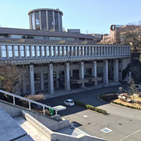

経歴
プロフィール
株式会社シップ2017年入社の八木です。
あの有名なアニメ「ラブライブ！サンシャイン」の聖地である静岡県沼津市出身です。
これまでの人生で沼津出身でよかったと思えること第1位は魚を捌けるようになったことです。
高校時代からデザインとプログラミングを学び、アイディアをカタチとして表現する力を養ってきました。
今まで学んだプログラミングの知識、これから身につけていくエンジニアとしての技術を駆使し、お客様の気持ちをカタチに変えるため、丁寧な仕事で応えていきます。
大学時代

専修大学ネットワーク情報学部ネットワーク情報学科情報数理プログラムを卒業しました。大学ではデータ分析、統計、グラフィックデザイン、UIデザイン、WEBデザインを学びました。元々は教員志望で入学しましたが、大学の指導教員の方針に疑念を抱き、ITの世界に目を向けるようになりました。
バイトは塾講師、イベントスタッフ、スーパーの店員など様々なものをやってきましたが、塾講師だけが唯一4年間続いたバイトでした。
大学時代は学校にいるかバイトにいるか、といった思い出しかないので何とも言えない時代です。
社会人
唯一就職活動をしたのが春に入社したシップです。
説明会に茶髪で参加するなど今思えばアホみたいな学生でしたがお酒の力を借りてなんとか内定をいただくことができました。内定をいただいたお酒の席は社長、社長のお友達、社長のお友達のお友達、人事リーダーという迷宮入りレベルの謎の組み合わせでした。
なんにせよ内定をいただけたので社員としてしっかりと仕事をしていきたいと思います。
八木の一問一答
| 質問 | 回答 |
|---|---|
| 好きなお酒のおつまみは？ | エイヒレ |
| 戦隊ものなら何色になりたい？ | 緑 |
| 無人島に持っていくなら？ | TOKIO |
| 好きなサッカーチームは？ | ガイナーレ鳥取 |
| 質問 | 回答 |
|---|---|
| 本社移転するならどこ？ | うちの隣 |
| きのこ派？たけのこ派？ | 紗々 |
| 桃太郎だったら何を連れてく？ | 猪木、アンドレ、ムタ |
| 韻踏んでください | 樺島...？だらしな |
- 質問
- 回答
- 質問
- 回答
- 好きなお酒のおつまみは？
- エイヒレ
- 戦隊ものなら何色になりたい？
- 緑
- 無人島に持っていくなら？
- TOKIO
- 好きなサッカーチームは？
- ガイナーレ鳥取
- 本社移転するならどこ？
- うちの隣
- きのこ派？たけのこ派？
- 紗々
- 桃太郎だったら何を連れてく？
- 猪木、アンドレ、ムタ
- 韻踏んでください
- 樺島...？だらしな